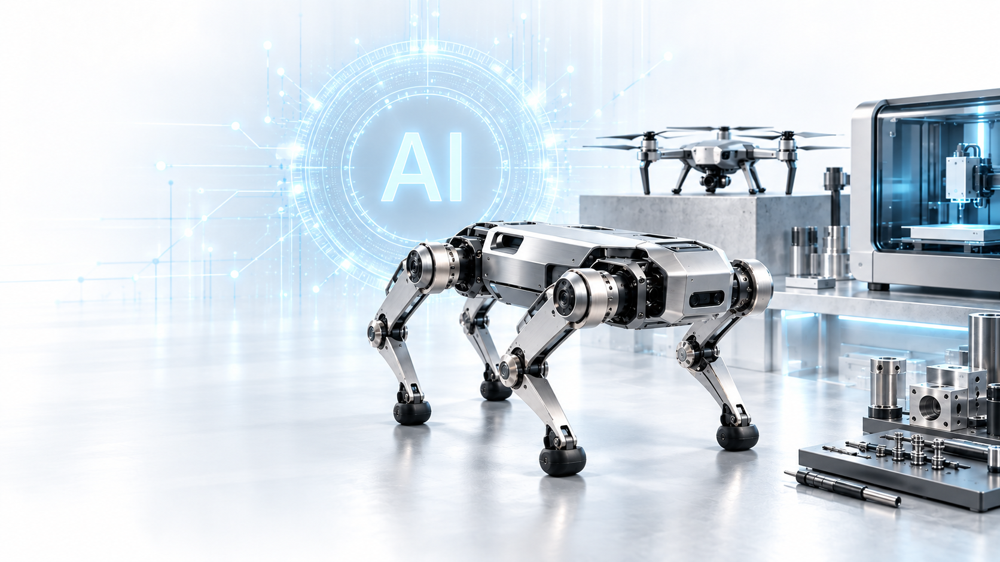
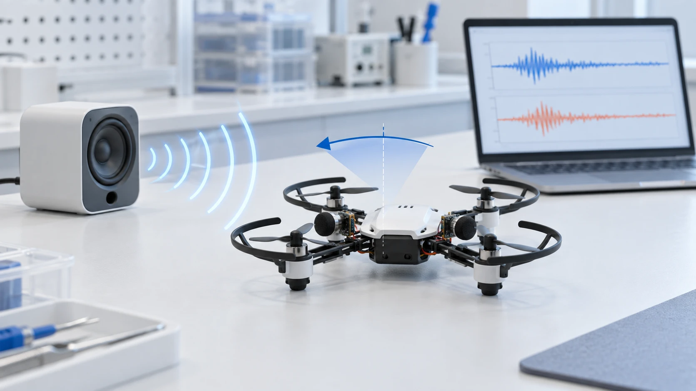

SANJO CITY UNIVERSITY
ありふれたものを、驚きに変える。
AI × MECHANICAL ENGINEERING


研究室の一日。
LAB FILM動画を読み込めませんでした。MP4を直接開く

MEET MOTARO
「なんで？」から、 次のものづくりへ。
研究室マスコットの「もーたろう」です。身近な機械への小さな疑問を、実験とAIで新しいアイデアに。次世代工学研究室の研究を、一緒にのぞいてみませんか。
学生の皆さんへSANJO CITY UNIVERSITY
AI × MECHANICAL ENGINEERING


動画を読み込めませんでした。MP4を直接開く
MEET MOTARO
研究室マスコットの「もーたろう」です。身近な機械への小さな疑問を、実験とAIで新しいアイデアに。次世代工学研究室の研究を、一緒にのぞいてみませんか。
学生の皆さんへ